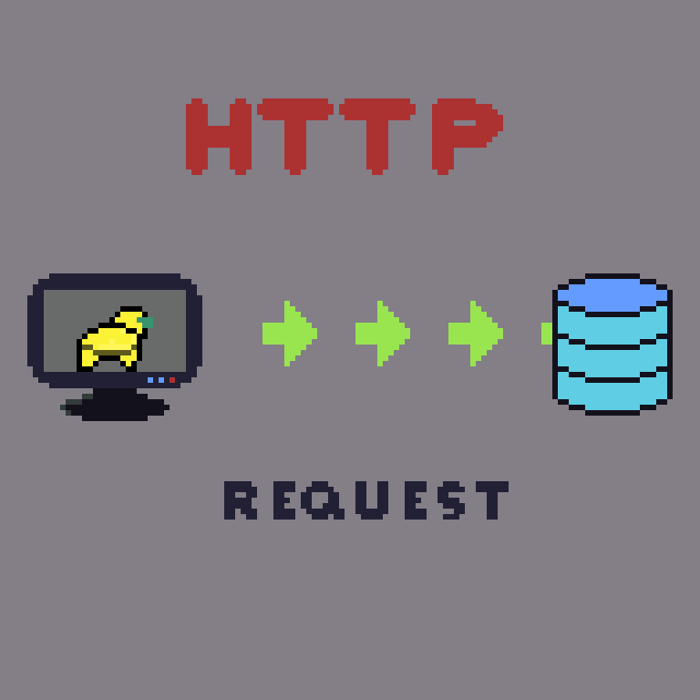

Os WebSockets são uma tecnologia que permite uma comunicação bidirecional em tempo real entre um cliente (navegador) e um servidor. Eles foram desenvolvidos para superar as limitações do modelo de requisição-resposta do protocolo HTTP.
O HTTP (Hypertext Transfer Protocol) é um protocolo de comunicação utilizado na Web. Ele funciona no modelo cliente-servidor, onde o cliente envia requisições para um servidor. Essas requisições contêm informações sobre a ação desejada, como obter um recurso específico. O servidor processa a requisição e envia uma resposta de volta ao cliente, contendo o recurso solicitado, juntamente com um código de status indicando o resultado da requisição. Essa troca de requisições e respostas permite a obtenção de recursos, como documentos HTML, imagens, vídeos e outros elementos necessários para a renderização de uma página da Web. Assim, o HTTP possibilita a interação entre clientes e servidores na Web, facilitando a obtenção e exibição de conteúdo.
Diferente do HTTP, onde uma conexão é estabelecida para cada requisição, os WebSockets estabelecem uma única conexão persistente entre o cliente e o servidor, permitindo que os dados sejam transmitidos em ambas as direções a qualquer momento, sem a necessidade de uma solicitação prévia.
A principal vantagem dos WebSockets é a capacidade de oferecer uma comunicação em tempo real, tornando-os ideais para aplicações que exigem atualizações contínuas de dados, como bate-papos, jogos online, notificações em tempo real e colaboração em tempo real.
O protocolo WebSocket é baseado em TCP e utiliza um handshake inicial baseado em HTTP para estabelecer a conexão. Uma vez estabelecida, a conexão WebSocket permite a transferência eficiente de dados em ambos os sentidos, utilizando um formato binário ou texto.
Os WebSockets também oferecem suporte a um mecanismo de "ping-pong" para garantir a disponibilidade da conexão. Isso permite que o servidor envie um ping para o cliente e, se não receber uma resposta adequada dentro de um determinado intervalo de tempo, ele pode fechar a conexão.
Além disso, existem várias bibliotecas e frameworks disponíveis para implementar WebSockets em diferentes linguagens de programação, tornando sua adoção mais fácil para os desenvolvedores.
Exemplo de implementação utilzando Python:
import asyncio
import websockets
# Função para tratar as mensagens recebidas do cliente
async def receber_mensagem(websocket, caminho):
mensagem = await websocket.recv()
print(f"Mensagem recebida: {mensagem}")
# Função para enviar uma mensagem ao cliente
async def enviar_mensagem(websocket, caminho):
mensagem = input("Digite uma mensagem para enviar ao cliente: ")
await websocket.send(mensagem)
# Função principal do servidor WebSocket
async def servidor_websocket(websocket, caminho):
# Loop para receber e enviar mensagens
while True:
await receber_mensagem(websocket, caminho)
await enviar_mensagem(websocket, caminho)
# Configuração e execução do servidor WebSocket
start_server = websockets.serve(servidor_websocket, 'localhost', 8765)
# Execução assíncrona do servidor
asyncio.get_event_loop().run_until_complete(start_server)
asyncio.get_event_loop().run_forever()
import asyncio
import websockets
async def cliente_websocket():
async with websockets.connect('ws://localhost:7894') as websocket:
while True:
mensagem = input("Digite uma mensagem para enviar ao servidor: ")
await websocket.send(mensagem)
resposta = await websocket.recv()
print(f"Resposta do servidor: {resposta}")
# Execução assíncrona do cliente
asyncio.get_event_loop().run_until_complete(cliente_websocket())
A biblioteca "websockets" em Python implementa o protocolo WebSocket, permitindo a comunicação bidirecional em tempo real entre um cliente e um servidor. É como ter um "canal" aberto de comunicação contínua entre eles. Usando a biblioteca websockets, você pode criar um servidor WebSocket para receber mensagens dos clientes e enviar mensagens de volta para eles